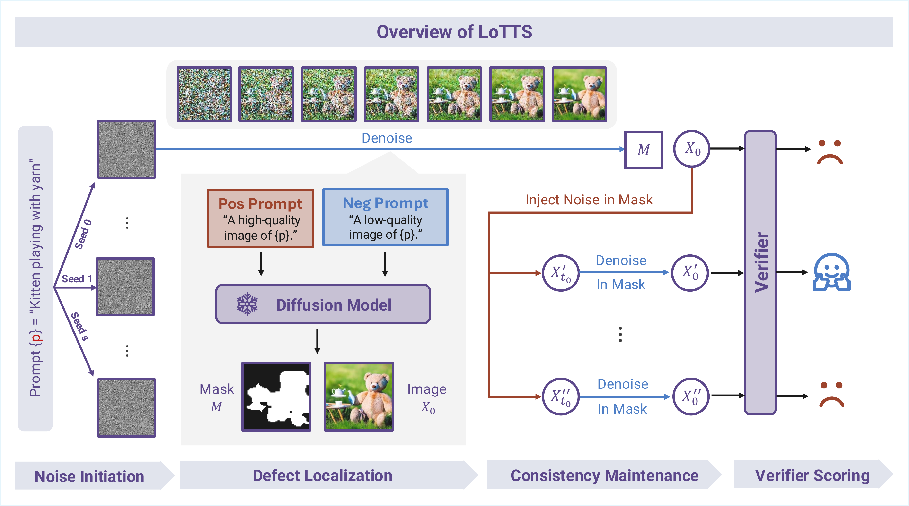
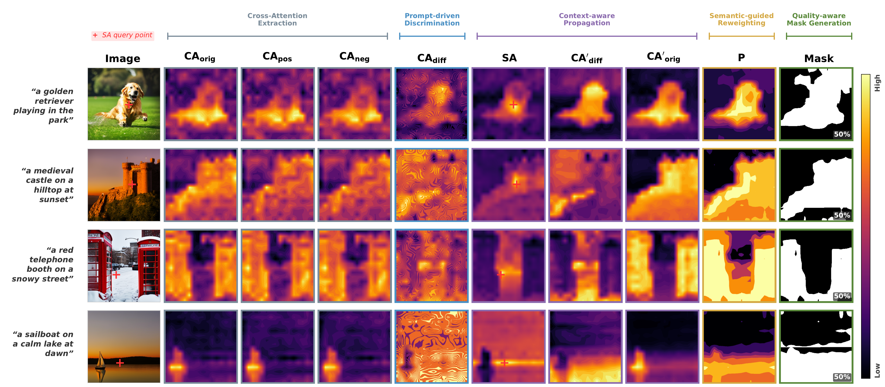
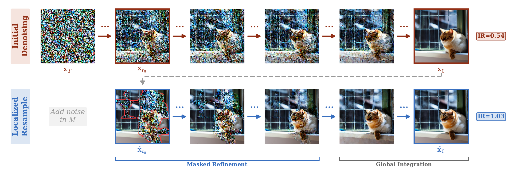
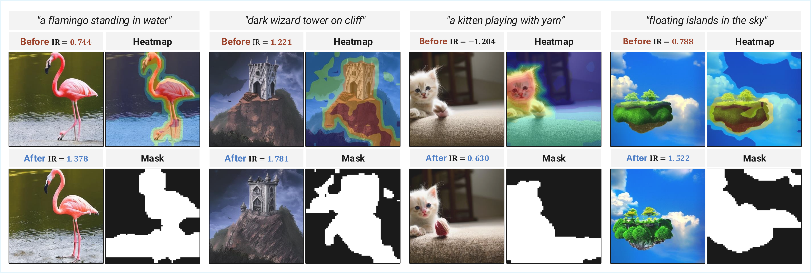
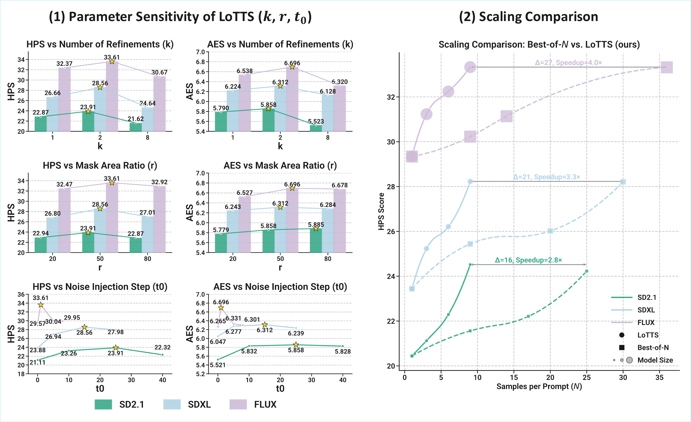
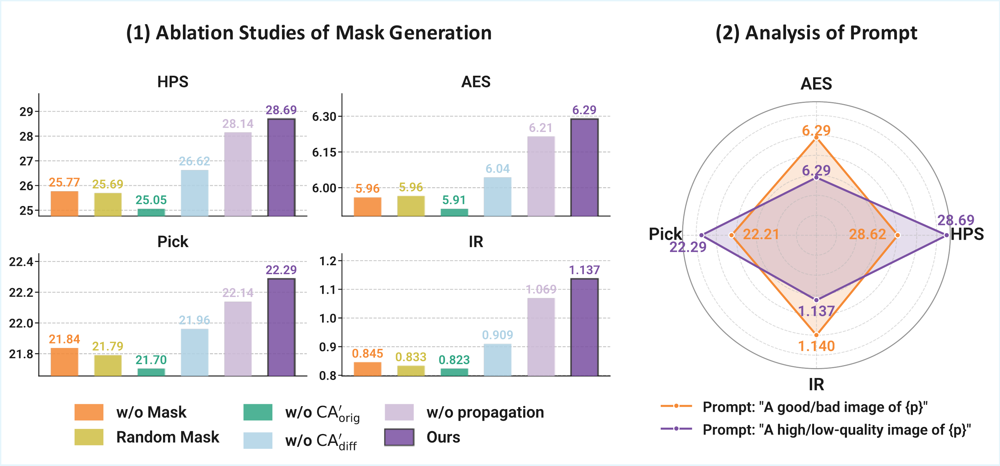
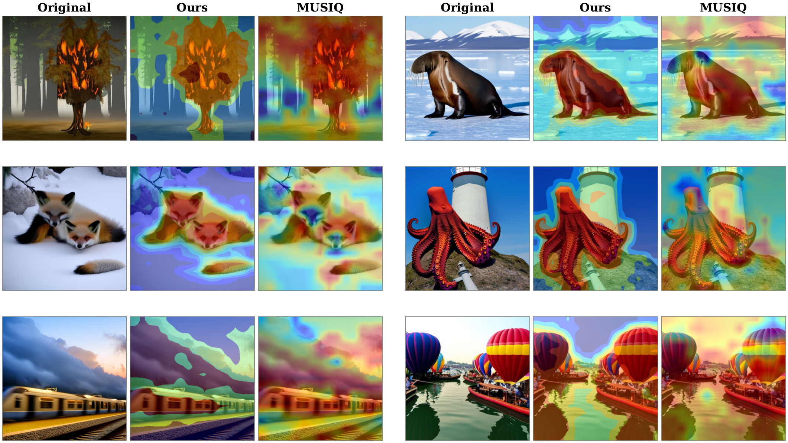

Scale Where It Matters:
Training-Free Localized Scaling for Diffusion Models
News
Overview
Test-time scaling for diffusion models usually perturbs the entire image, yet quality is often uneven across the canvas.
Defects are typically localized: additional compute is better spent on weak regions than on restarting the whole sample.
LoTTS is training-free: attention-derived masks for localization, masked resampling with consistency controls—see Method; SD2.1 / SDXL / FLUX experiments in Results.
- Localization. Contrast cross-/self-attention under quality prompts; form a coherent defect mask.
- Resampling. Noise injection and denoising inside the mask; brief global harmonization.
- Efficiency. Plug-and-play across backbones; ~2–4× fewer samples than Best-of-N at matched budgets.
Method
Overview of LoTTS
Given a text prompt, LoTTS first generates candidate images from different noise seeds. It then localizes defective regions using high-/low-quality prompt contrast and constructs a quality-aware mask. Noise is injected only inside the masked regions, followed by localized denoising with spatial and temporal consistency. A verifier finally selects the best refined sample.

Defect Localization
Defect Localization Overview. From extracted cross-attention maps, the pipeline produces coherent defect masks through prompt-driven discrimination, context-aware propagation, semantic-guided reweighting, and quality-aware mask generation.

Consistency Maintenance
Localized Resampling Process. Initial Denoising: standard denoising produces \(\mathbf{x}_0\) with localized artifacts (IR = 0.54). Localized Resample: LoTTS injects noise within the defect mask \(\mathbf{M}\) at step \(t_0\), then performs Masked Refinement followed by Global Integration, yielding \(\tilde{\mathbf{x}}_0\) with improved quality (IR = 1.03).

Results
Quantitative Comparison
LoTTS consistently outperforms Resampling, Best-of-N, and Particle Sampling under matched NFE budgets across three architectures (SD2.1, SDXL, FLUX) and three benchmarks.
| Model | Method | Pick-a-Pic | DrawBench | COCO2014 | |||||||
|---|---|---|---|---|---|---|---|---|---|---|---|
| HPS↑ | AES↑ | Pick↑ | IR↑ | HPS↑ | AES↑ | Pick↑ | IR↑ | FID↓ | CLIP↑ | ||
| SD2.1 | Resampling | 20.44 | 5.377 | 20.32 | 0.236 | 21.34 | 5.456 | 20.23 | 0.244 | 15.33 | 0.201 |
| Best-of-N | 21.56 | 5.534 | 21.04 | 0.470 | 22.45 | 5.589 | 20.59 | 0.446 | 13.21 | 0.252 | |
| Particle Sampling | 23.44 | 5.980 | 21.30 | 0.530 | 22.19 | 5.790 | 21.23 | 0.520 | 12.34 | 0.260 | |
| LoTTS (Ours) | 24.52 | 5.805 | 21.32 | 0.680 | 23.29 | 5.911 | 21.47 | 0.698 | 10.89 | 0.263 | |
| SDXL | Resampling | 23.44 | 6.011 | 21.18 | 0.680 | 23.84 | 6.034 | 21.09 | 0.657 | 9.56 | 0.234 |
| Best-of-N | 24.54 | 6.198 | 22.01 | 0.790 | 25.27 | 6.238 | 22.23 | 0.756 | 8.34 | 0.268 | |
| Particle Sampling | 25.33 | 6.235 | 22.05 | 0.865 | 26.46 | 6.233 | 22.31 | 0.844 | 7.99 | 0.271 | |
| LoTTS (Ours) | 28.23 | 6.304 | 22.30 | 1.102 | 28.90 | 6.321 | 22.38 | 1.111 | 7.33 | 0.297 | |
| FLUX | Resampling | 29.34 | 6.298 | 22.07 | 1.038 | 29.28 | 6.223 | 22.05 | 1.100 | 7.01 | 0.282 |
| Best-of-N | 30.23 | 6.299 | 22.89 | 1.235 | 30.46 | 6.290 | 22.33 | 1.221 | 6.34 | 0.306 | |
| Particle Sampling | 31.56 | 6.532 | 23.31 | 1.450 | 32.28 | 6.523 | 22.90 | 1.445 | 6.02 | 0.332 | |
| LoTTS (Ours) | 33.33 | 6.501 | 23.04 | 1.605 | 33.90 | 6.890 | 23.21 | 1.623 | 5.31 | 0.351 | |
Qualitative Comparison
Qualitative results on challenging text-to-image prompts. Compared to Resampling, Best-of-N, and Particle Sampling, LoTTS better follows complex prompts. Green borders indicate high-quality generations, red mark lower-quality ones, and brown shows the initial image used as the starting point of localized refinement.

Localized Refinement
Localized Refinement on SD2.1. LoTTS corrects diverse localized artifacts (e.g., distorted hands and faces). Heatmaps show per-region artifact scores, and binary masks indicate the regions selected for refinement.

Scaling Efficiency
(1) Parameter sensitivity analysis — LoTTS maintains stable improvements across varying \(k\), \(r\), and \(t_0\). (2) Scaling Comparison — LoTTS reaches the same HPS as Best-of-N with far fewer samples, yielding 2.8–4× speedup.

Ablation Studies
(1) Ablation of Mask Generation. Removing any component consistently degrades all four metrics. (2) Prompt Design. Radar chart comparing two prompt strategies: LoTTS is robust to prompt phrasing.

Comparison with MUSIQ quality maps. Each triplet shows the original image, our attention heatmap, and the MUSIQ heatmap (red = lower quality). Both methods consistently highlight similar low-quality regions — despite ours being entirely training-free.

Citation
@article{ren2025lotts,
title = {Scale Where It Matters: Training-Free Localized
Scaling for Diffusion Models},
author = {Ren, Qin and Wang, Yufei and Guo, Lanqing
and Zhang, Wen and Fan, Zhiwen and You, Chenyu},
journal = {arXiv preprint arXiv:2511.19917},
year = {2025}
}